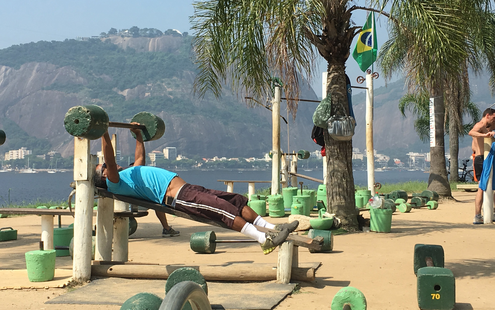

<ion-content padding>
  <div class="centro">
  
  </div>
<div style="height:200px;width: 100%;margin-bottom: 20%;">

  <ion-slides  autoplay="3700" loop="true" speed="330" pager="true">

    <ion-slide>
      
    </ion-slide>

    <ion-slide>
      
    </ion-slide>

    <ion-slide>
      
    </ion-slide>
  </ion-slides>

</div>

  <div class="icones" (click)="clinica()">
    
    <h1 style="text-align: center;margin-top: 0px;">Clínicas </h1>
  </div>
  
  
  <div class="icones" style="margin-left: 4%;" (click)="academia()">
    
    <h1 style="text-align: center;margin-top: 0px;">Academias</h1>
  </div>
 
</ion-content>

<ion-footer>
  <ion-navbar>
    <div class="espaco">
      <button (click)="inicio()">
        <ion-icon name="ios-home-outline"></ion-icon>
      </button>
    </div>  
    <div class="espaco">
      <ion-icon name="ios-person-outline"></ion-icon>
    </div> 
    <div class="espaco">
      <button (click)="info()">
      <ion-icon name="ios-options-outline"></ion-icon>
    </button>
    </div>  
    <!-- <div class="espaco">
        <button (click)="socias()">
          <ion-icon name="logo-rss"></ion-icon>
        </button>
    </div>  -->
    
  </ion-navbar>
</ion-footer>